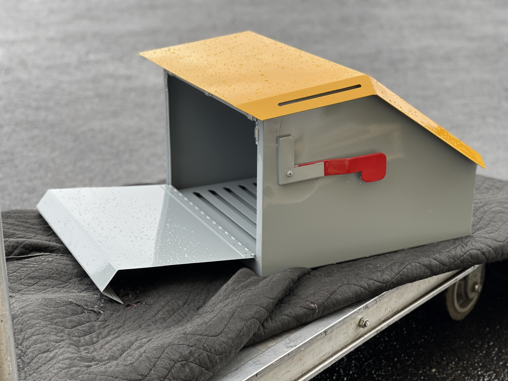

Post-box Mailbox:
I’m on a journey to explore my family’s history and how they arrived in North America,
using kente as a lens. This project examines how Black Americans descended from enslaved
people have lost their cultural identity. We’re no longer African because our languages,
clothes, practices, and religions—our culture—were taken from us. We’re not seen as
fully American; instead, we’re given the label African American, which sets us apart.
We didn’t get to live the American dream or the story of immigration. Instead, we were
forced into slavery and subjected to racial discrimination. Through this project,
I’m working to document my family’s history using kente.